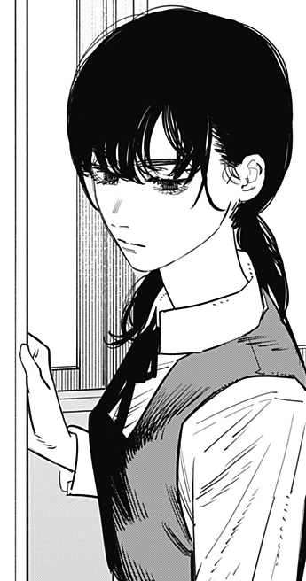

My life is just... one long string of attempts to avoid making mistakes.
That's why... That's why I'm a total bore...
My favourite character ever is Asa Mitaka from manga Chainsaw Man. She is the main protagonist of the 2nd part of the series.
|
Asa is initially a quiet and unsociable girl. She dislikes her classmates, frequently wishing they would drop dead and spurning any offers of friendship, and she would prefer to study over making friends. She tends to assume the worst of others, often interpreting actions and intentions of others as being more mean-spirited than they actually are, such as believing Denji sold cigarettes to others solely to benefit himself, unaware that he was raising money to afford Nayuta's university tuition. She dislikes all Devils as a result of her parents being killed by one. She also suffers from low self-esteem and considers herself a clumsy individual. Asa can be extremely socially inept in novel situations for her, such as romance and going on a date. Despite this Asa can be falsely self-assured and overconfident in situations such as when she believed she's easily capable of seducing any boy if she showed him a fraction of a good time. |
 |
|---|